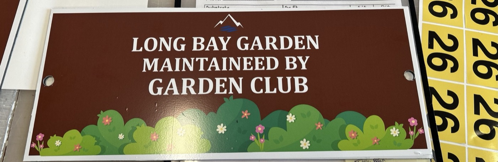
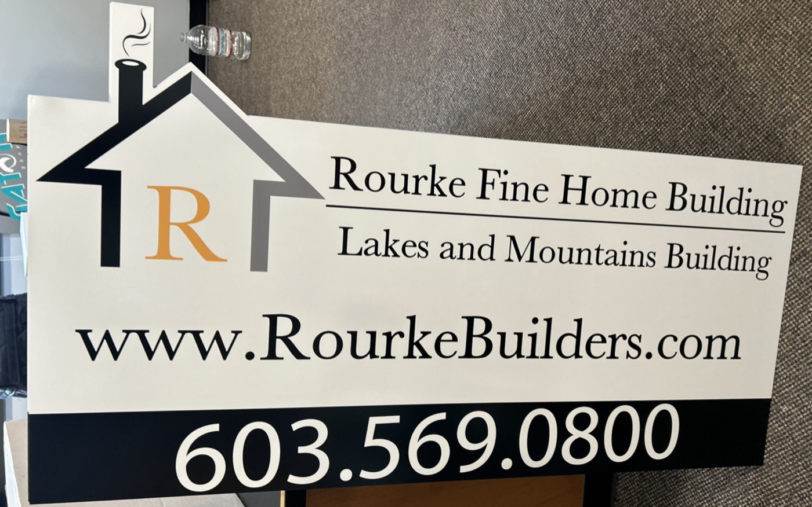
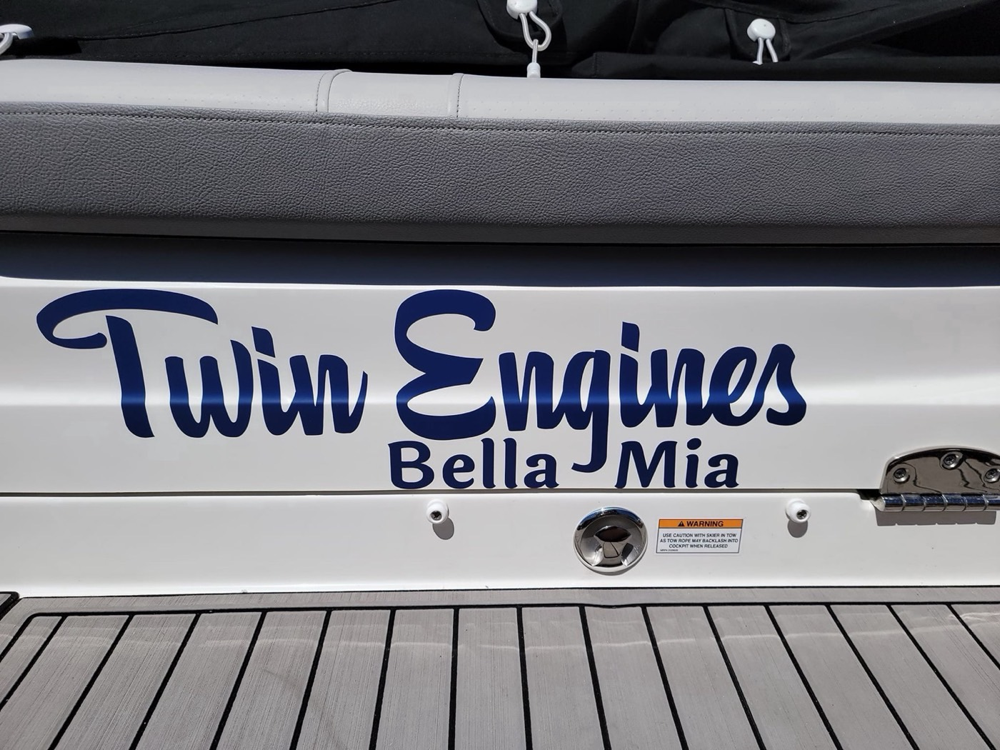
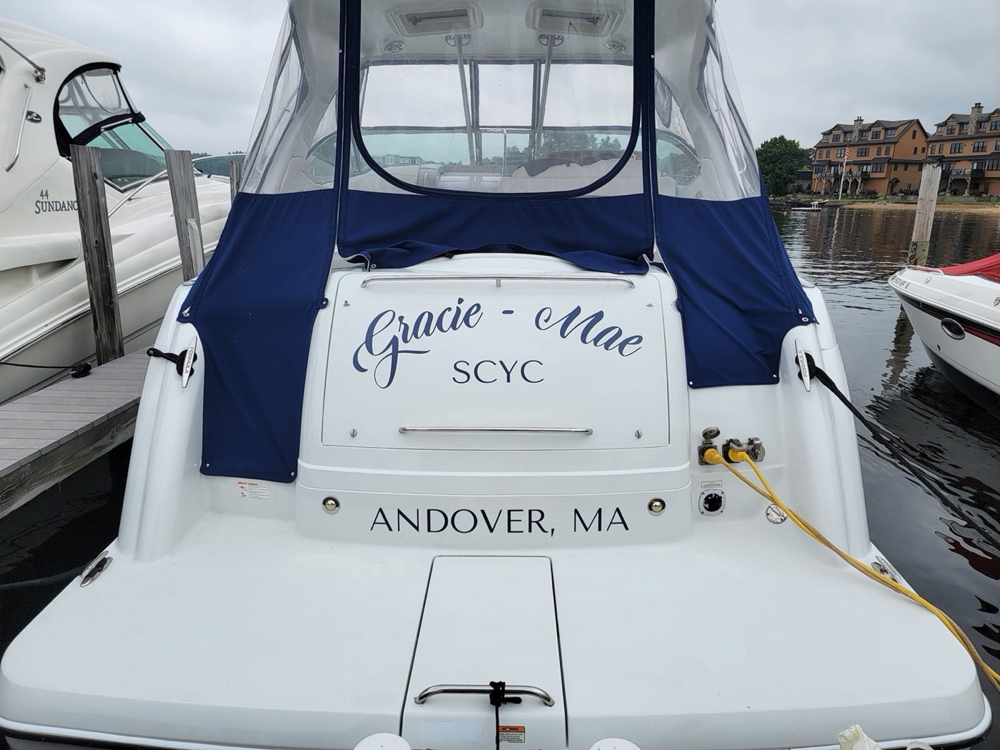
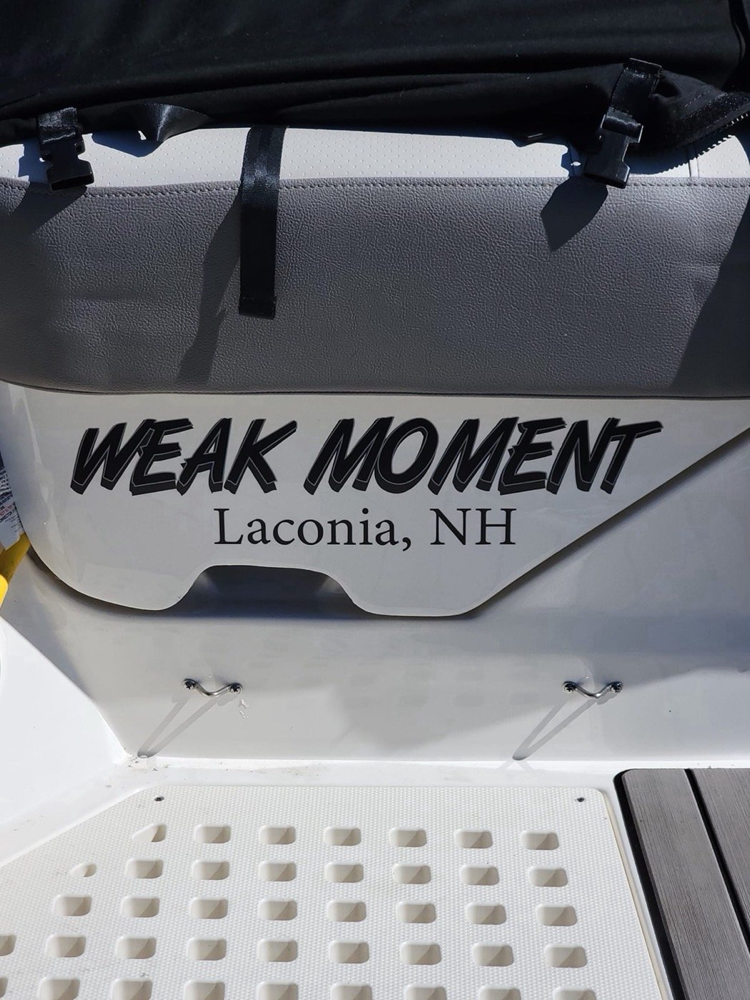
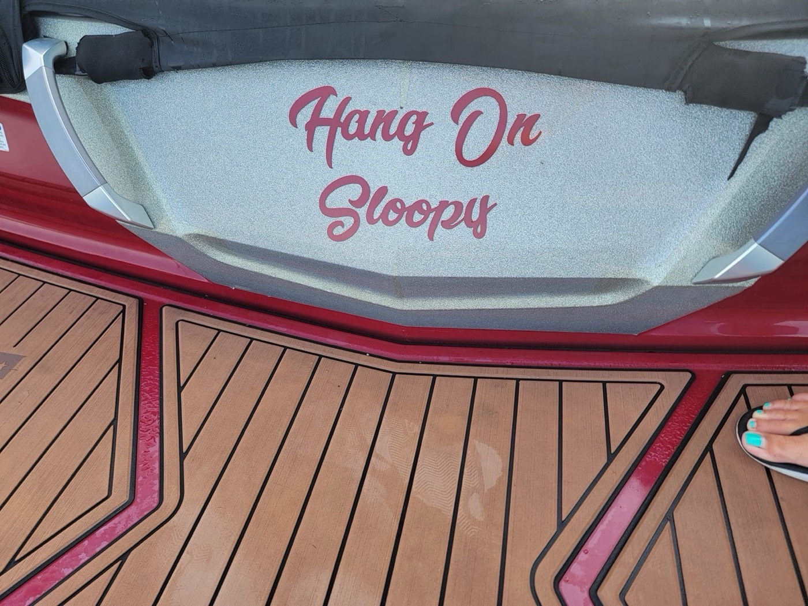
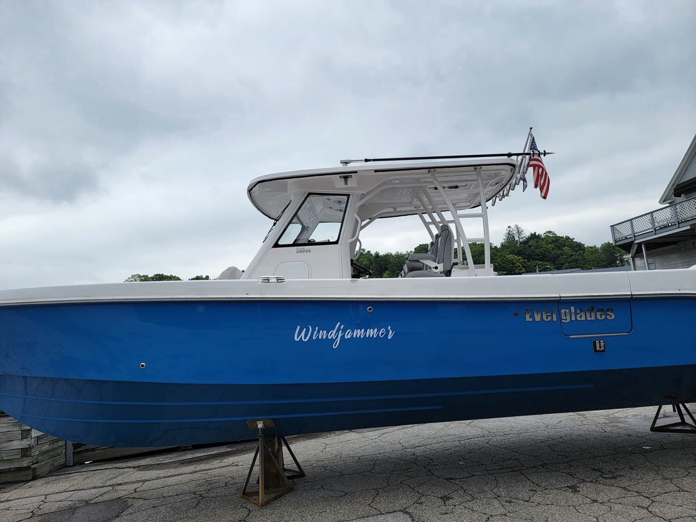
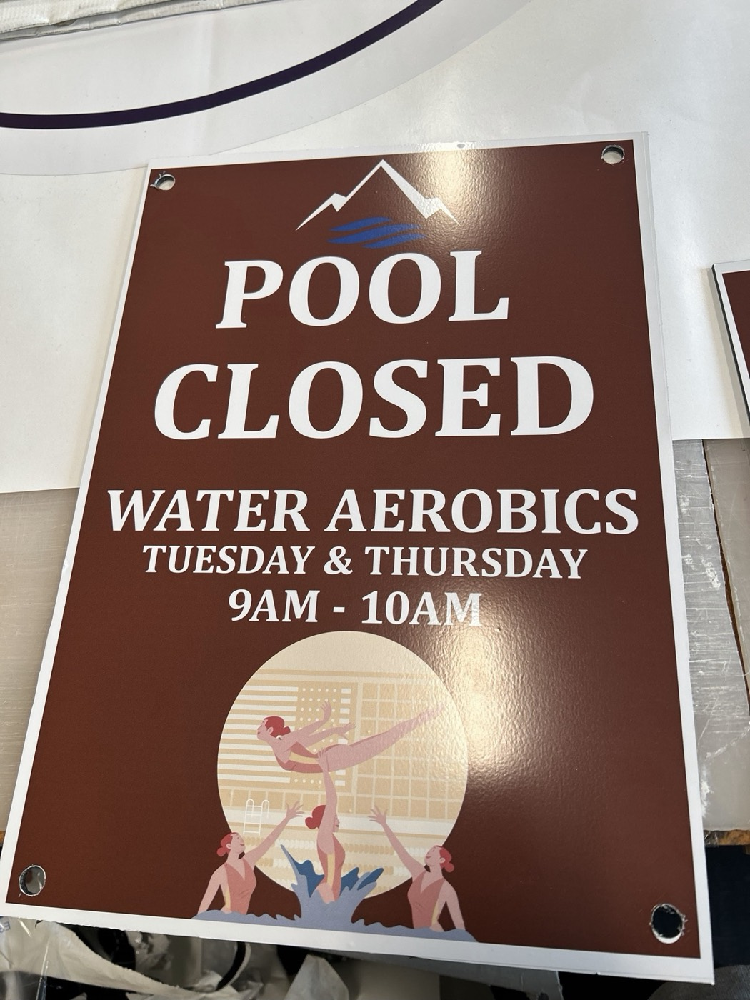
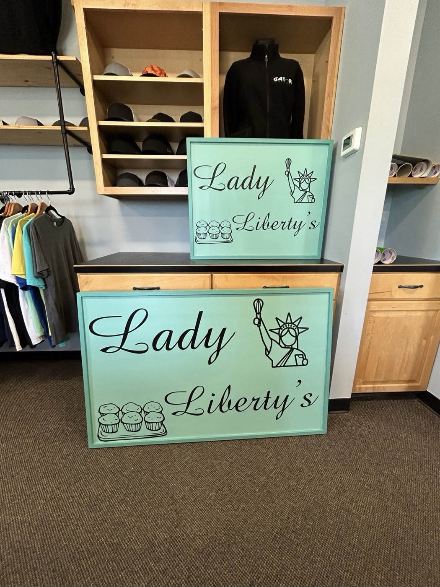
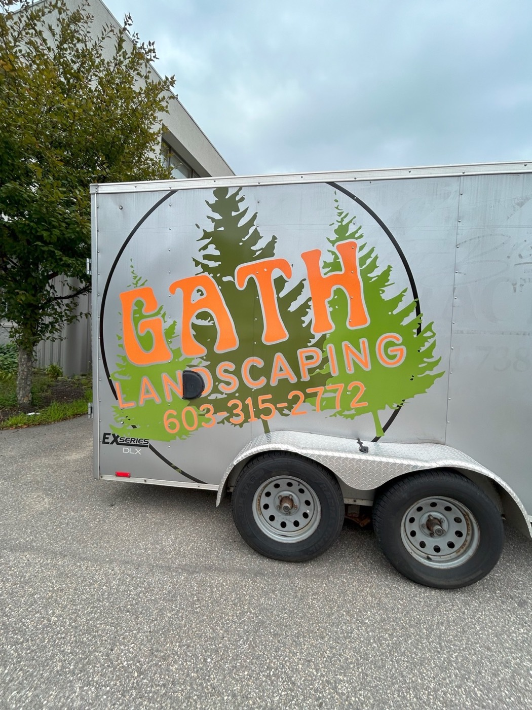

Outcome
Designing for a real customer means listening first.
Beyond boats: signs for the Long Bay Garden Club and Rourke Fine Home Building, a Lake Winnipesaukee sign, plus shirts and banners.



Case study · Client work · 2024–2025
Two summers as graphic designer and manager at a sign shop in Laconia, New Hampshire, making custom boat graphics, signs and banners for local businesses and boat owners.
My role
Graphic designer & manager
Timeline
Summers 2024–2025
Where
Gator Graphix · Laconia, NH
Tools
Adobe Illustrator, print and vinyl equipment


The job
Every job started with a conversation. I met one on one with customers to turn their ideas into designs, then produced and installed them, from boat names to business signs and banners.

Names
Custom names sized and spaced to read from the dock.

Decks
Script names cut in vinyl and laid onto the deck.

Hulls
Large graphics designed to fit the curve of the hull.
Process
Step 1
Talk through the idea, size and budget with the client.
Step 2
Draft options in Illustrator and refine them together.
Step 3
Print or cut the vinyl and prep the materials.
Step 4
Apply the graphics on site, from boats to trailers.



Outcome
Designing for a real customer means listening first.
Beyond boats: signs for the Long Bay Garden Club and Rourke Fine Home Building, a Lake Winnipesaukee sign, plus shirts and banners.


Next project
Intertwine →